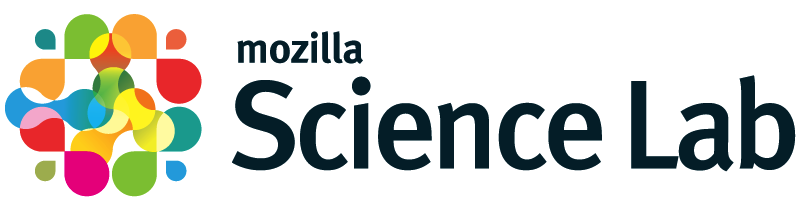

October 2013 Lab Meeting
25 people attended our monthly (ish) online lab meeting yesterday, during which we announced and discussed a wide variety of topics. The detailed summary is below the fold, but the key action items are:
- Please take a moment to read Kaitlin Thaney's post about what's going on with the Mozilla Science Lab. We hope to announce some new projects at MozFest in London in a couple of weeks, and more shortly after that.
- There's been a flurry of pull requests and comments on lesson material in the past couple of weeks, which is great news for our sustainability. To keep the momentum going, please either send at least one pull request on the teaching materials, or make at least one comment on someone else's pull request, by Monday Oct 14.
- In aid of this, please get in touch if you're willing to spend a bit of time in the next couple of weeks helping instructors-in-training learn a bit more about GitHub and pull requests.
- Finally, please each introduce us to one new potential bootcamp host: we have a bunch of new instructors, so we're now able to take on more load.

- A quick hello from Kaitlin Thaney, Director of the Mozilla Science Lab
-
- MSL launched June 2013
- How to push open science/digital research and make them the norm? How can Mozilla help make this happen? There's more to us than Firefox: world-class development team, open source development strategies, deep commitment to open access/open communities, inter-operability and open standards
- Please reach out and contact us with project ideas, comments, and anything else
- For more on our structure and thinking see these blog posts.
- Submitting and reviewing pull requests on the new lesson material
-
- In the last few weeks, a handful of people have started submitting and reviewing GitHub pull requests on the lesson material in the new bc repo
- To accelerate this, we've asked people currently going through instructor training to pair up, pick one small topic, and submit PRs on it
- Improving and extending the material is one goal
- The other is to get us working like a proper open source project, with frequent patches and reviews
- And to ensure that newcomers see this happening and start doing it as well
- To Do: submit a small pull request, or review one of the ones that is waiting
- Creating a "tips and tricks" page
-
- Aron Ahmadia has volunteered to create and maintain a page for little ideas that have worked well in class
- E.g., using red/green sticky notes for feedback
- Or using Etherpad for note-taking, sharing code snippets, etc.
- For the moment, please send him mail if you have things you'd like to share
- Once the page is up, please send pull requests
- Aron Ahmadia has volunteered to create and maintain a page for little ideas that have worked well in class
- What lesson material should be on the main web site, and why?
-
- We currently have the Version 4 material (video tutorials done in 2010-11) and a link to the older Version 3 material (HTML pages written in 2006-07)
- The new material in the 'bc' repo isn't on the main web site (in part because it's still under development)
- Most people agree that text is better than video for most learning situations...
- ...and when we look at server logs, it seems that most people who use the site watch a little bit of a few videos, but mostly read or search through our text...
- ...but the videos do impress people, and are useful to people using flipped classrooms...
- ...but are very expensive to maintain (in fact, there hasn't been any real maintenance in two years)
- Karin Lagesen suggested that we have a few very polished lessons with videos on the web site as advertising, then link to the rendered versions of the stuff in the 'bc' repo (not to the repo itself, which would scare newcomers)
- A related suggestion is to have short (one minute?) video intros to lessons, but keep the bulk of the material in text
- Another suggestion is to use extracts from videos recorded at conferences and bootcamps of people presenting this material (e.g., Katy Huff and Matt Davis's lessons at SciPy)
- If someone would like volunteer to do this, we'd be happy to host it on the site
- See also #132
- What should we do about absolute beginners?
-
- Titus Brown has recently taught three bootcamps for people with no previous computing experience of any kind
- Very well received: there really are a lot of smart scientists out there who need and want training at this level
- Two key points:
- Domain-specific motivation is really important
- Really gearing down to zero-level entry is a lot harder than it seems: we all unconsciously assume more than many people actually know
- We don't have the resources to write and maintain another set of lesson materials
- But we can and should start offering/advertising bootcamps as either "zero previous knowledge" or "some previous knowledge", and actually meaning it
- Ian Mitchell pointed out that there's a tension between saying that bootcamps must cover certain material in order to use our name and logo and encouraging people to run zero-entry bootcamps that cover less than that
- In the short term, the answer is, "Check with Greg," but we'll revisit the rules when we have more data
- Looking for volunteers to help with:
-
- Sys admin tasks: Jon Pipitone has done a great job moving us over to our new hosting service, but we need another volunteer to give us a couple of hours a week to keep things going
- David Rio has volunteered; more volunteers would be welcome
- Update our badging: the spec has moved on since we started issuing badges, so we need a few hours from someone who knows a bit of Javascript as well as Python to update our machinery (see #3 and #125)
- We're close to being able to issue PDF certificates to people who've attended bootcamps, along with badges, but the template for the certificate needs some graphic design work, and then the script that fills it in and produces the PDF needs to be polished (see #4 and #92)
- Maintaining our Windows installation tools and instructions: Anaconda plus the little Nano installer that Ethan White wrote is working well, but we need someone to maintain it and extend it
- We'd like someone to create a template for
nbconvert(the IPython Notebook's notebook-to-HTML conversion tool) so that we can render notebooks in the same style as our web site pages (see #119)
- Sys admin tasks: Jon Pipitone has done a great job moving us over to our new hosting service, but we need another volunteer to give us a couple of hours a week to keep things going
- Jobs
-
- Aron Ahmadia's group at the US Army Engineer Research and Development Center is looking for hydrologists in particular, and computational scientists in general—please contact him for details
- And please post to the discussion list when you have job openings or are looking for a position
- Running classes for companies
-
- As per the FAQ, we encourage people to teach bootcamps commercially when they can, and are happy to advertise them on the web site, help line up instructors, etc.
- But they are still subject to the rules governing use of the name and logo
- And we do not want to get involved in discussions of fees
- Running Bootcamps
-
- Going forward, Amy Brown will create checklists online for bootcamp organizers so that they can keep track of who has done (or is supposed to do) what.
- Please put us in touch with more potential hosts: we now have the instructors to meet demand!
Our next lab meeting will be on Thursday, November 14, and we hope to see you all there.
Originally posted 2013-10-04 by Greg Wilson in Community.
comments powered by Disqus